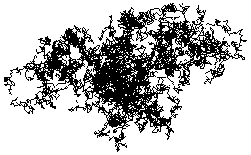

| Some early history of Brownian motion. |
| Brownian motion in the plane, and a first look at scaling. |
| A clearer picture is the graph of Brownian motion in 1 dimension. |
| Here are some of the mathematical properties of Brownian motion. |
| For comparison with data, here are the visual signatures of Brownian motion. Anticipating later work, for amusement we compare these graphs with some stock market data. |
| Finally, we mention the Brownian bridge, a related construction of some theoretical importance now. |
Return to Random Fractals.